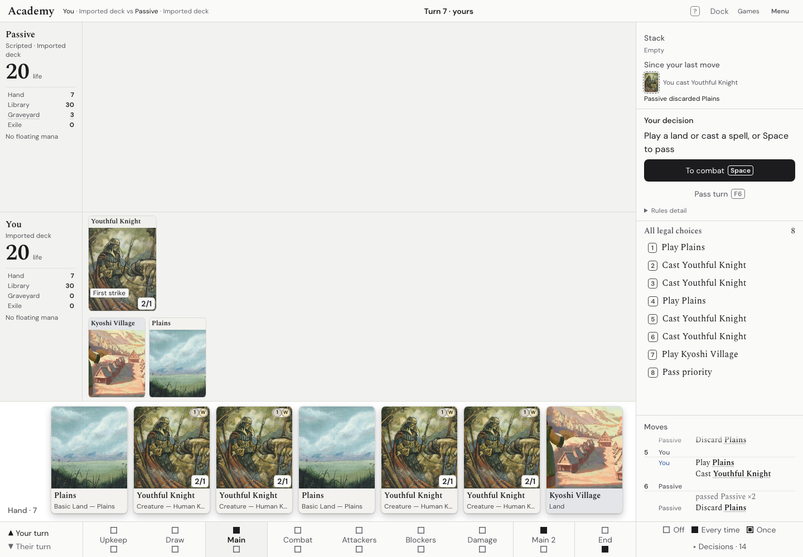
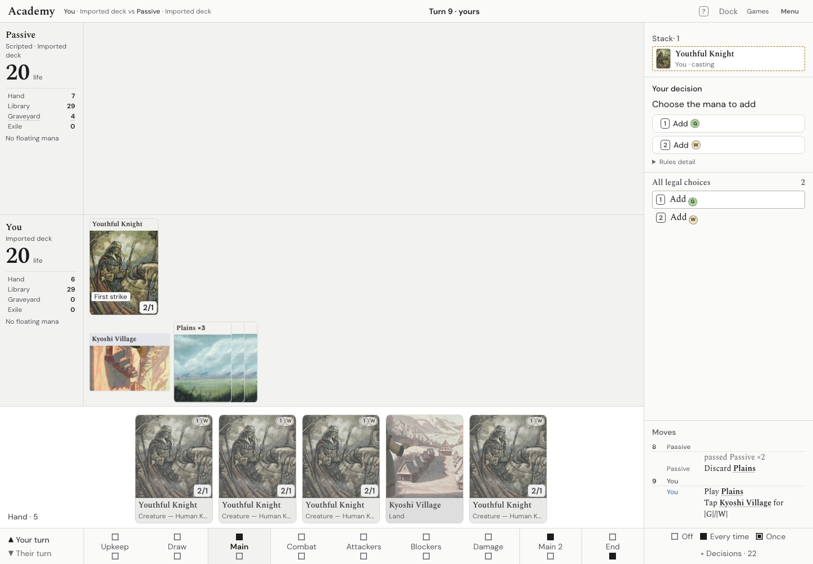
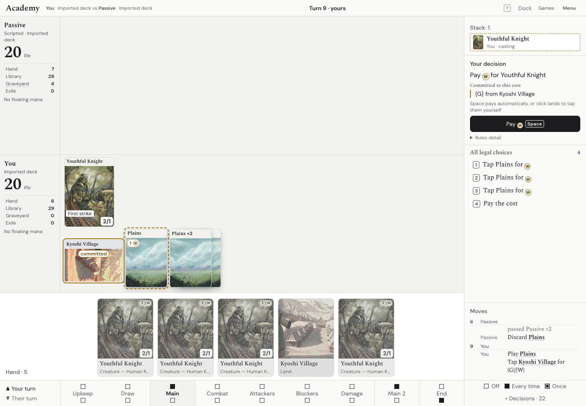

Release extension rebuilt at a52be82eca; static SPA built; managym academy play configured launch with imported
decks (14 Kyoshi Village / 10 Plains / 16 Youthful Knight vs 40 Plains, passive opponent, seeds 7 and 11),
driven by headless Chromium clicking only [data-testid=action-option] offers. Manual mana payment is the Academy default.
Seed 11, turn 5: Village (played turn 1) and Plains untapped. Clicked Cast Youthful Knight; the next decision was ordinary priority. The Moves log reads Play Plains · Cast Youthful Knight with no tap entries. Seed 7 (two Villages) behaved the same.

Seed 11, turn 9. Stop reads Pay {1}{W} for Youthful Knight with exactly: Tap Kyoshi Village for {G}/{W}, three Tap Plains for {W}, Pay the cost. No Activate ability offer. With 9 Villages + 2 Plains (seed 7, late game) the stop lists nine Village taps, two Plains taps and Pay the cost — still no generic activation.
In this browser game the 4th land (a Plains) was played the same turn, so one Plains entered_this_turn. The engine
treats it as a distinct source (the flag is in the policy observation and drives power-up costs), so G and W lead to different
states and the modal is real: after Add {G}, Pay {W} offers all three Plains.
Fixed: the modal prompt read “Choose a mode for Youthful Knight” — the color choice of a land, described as a mode of
the spell. Academy now reads the native mana_color stage: “Choose the mana to add”
(academy/ui/src/lib/board/prompt.ts, test in prompt.test.ts).


Real seeded game through the Academy GameSession (same server code, played by offers from a fresh game, no scenario helpers),
seed 11, casting the turn after the 4th land:
CAST turn 9 ['Play Kyoshi Village', 'Play Plains', 'Play Plains', 'Play Plains']
STOP PAY_OR_NOT ['Tap Kyoshi Village for {G}/{W}', 'Tap Plains for {W}' ×3, 'Pay the cost']
DONE tapped: ['Kyoshi Village', 'Plains'] turn 9 (no color modal, no second stop)
Casting on the same turn as the 4th land instead gives the modal and the second stop, as in section 3.
pytest tests/academy/test_dual_land_payment.py tests/academy/test_payment_preview.py tests/env/test_skip_forced_decisions.py: 11 passed.npx vitest run (academy/ui): 651 passed.cargo nextest run --profile ci -E 'binary(source_taps)' in debug: 30 passed.entered_this_turn, which keeps both the
color modal and a second Pay {W} stop for Village + 3 Plains. Correct under the current equivalence rule (the flag is
rules- and observation-visible), but it means the plan's demo only skips the modal when no land entered this turn. Noted in
scratch/questions.md.Not reached: the Gruul Guildgate / Gray Ogre table rows in the browser (covered by source_taps engine tests only).